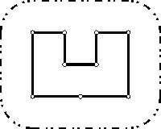

 Once upon a time there was a greedy King who ordered his chief Architect to build a wall around the King's castle. The King was so greedy, that he would not listen to his Architect's proposals to build a beautiful brick wall with a perfect shape and nice tall towers. Instead, he ordered to build the wall around the whole castle using the least amount of stone and labor, but demanded that the wall should not come closer to the castle than a certain distance. If the King finds that the Architect has used more resources to build the wall than it was absolutely necessary to satisfy those requirements, then the Architect will loose his head. Moreover, he demanded Architect to introduce at once a plan of the wall listing the exact amount of resources that are needed to build the wall.
Your task is to help poor Architect to save his head, by writing a program that will find the minimum possible length of the wall that he could build around the castle to satisfy King's requirements.
The task is somewhat simplified by the fact, that the King's castle has a polygonal shape and is situated on a flat ground. The Architect has already established a Cartesian coordinate system and has precisely measured the coordinates of all castle's vertices in feet.
The first line of the input file contains two integer numbers N and L separated by a space. N (3 ≤ N ≤ 1000) is the number of vertices in the King's castle, and L (1 ≤ L ≤ 1000) is the minimal number of feet that King allows for the wall to come close to the castle.
Next N lines describe coordinates of castle's vertices in a clockwise order. Each line contains two integer numbers Xi and Yi separated by a space (-10000 ≤ Xi, Yi ≤ 10000) that represent the coordinates of ith vertex. All vertices are different and the sides of the castle do not intersect anywhere except for vertices.
Write to the output file the single number that represents the minimal possible length of the wall in feet that could be built around the castle to satisfy King's requirements. You must present the integer number of feet to the King, because the floating numbers are not invented yet. However, you must round the result in such a way, that it is accurate to 8 inches (1 foot is equal to 12 inches), since the King will not tolerate larger error in the estimates.
1 9 100 200 400 300 400 300 300 400 300 400 400 500 400 500 200 350 200 200 200
1628